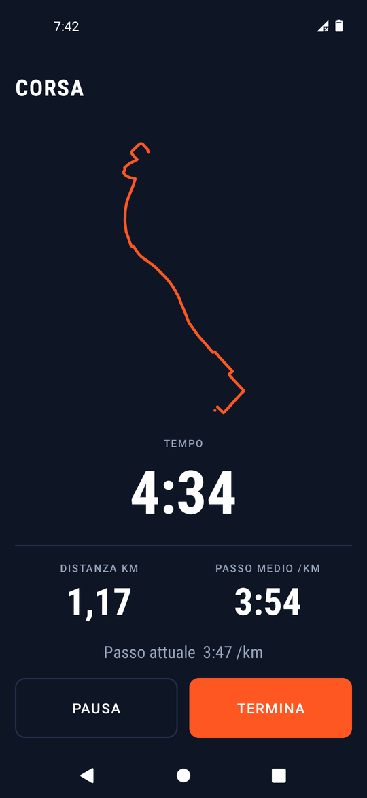

Mentre corri o pedali
- Tempo, distanza, passo medio (o velocità per la bici) e passo degli ultimi 30 secondi.
- La forma del percorso disegnata dal vivo, senza scaricare mappe.
- Pausa automatica quando ti fermi a un semaforo; riparte appena ti muovi.
- Avvisi vocali ogni chilometro di corsa (ogni 5 in bici) con tempo e passo, sopra la musica.
- Notifica con tempo e distanza e il tasto Pausa, senza sbloccare il telefono.
- Continua a schermo spento. Ogni punto viene scritto subito su disco: se il telefono si spegne, quello che hai fatto resta.